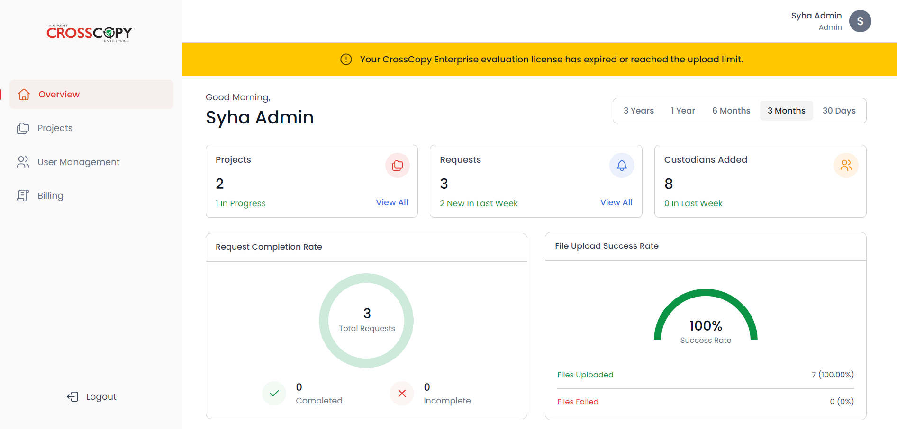
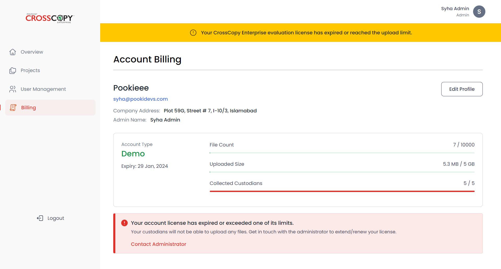
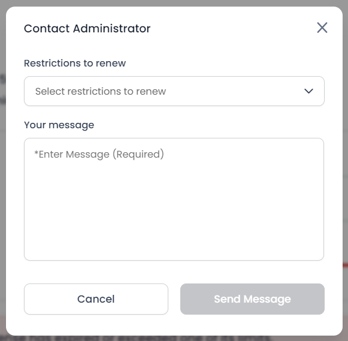
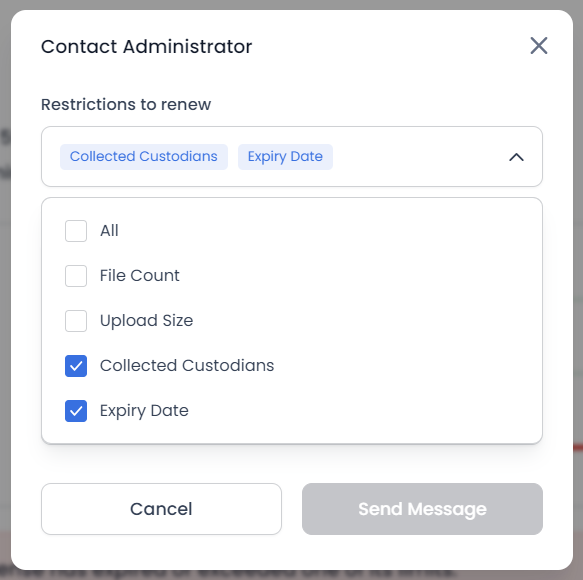
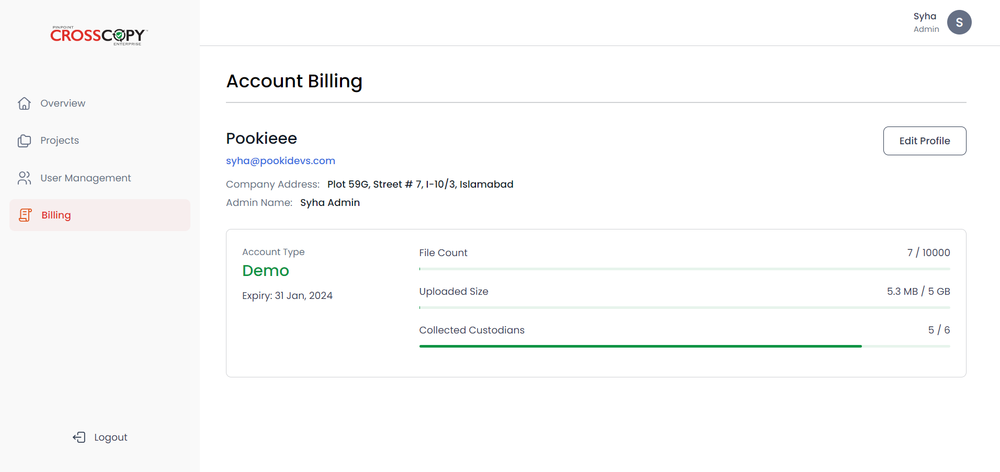

If either your account’s expiry date passes, or you exceed any of your quotas (file count, uploaded size, collected custodians), you will start seeing a message on the top of your screen indicating that your license has either expired or reached its maximum limit.
To keep using your account, you will need to request an increment in your quota or your account’s expiration date. Go to your Billing page where you will see a message in red at the bottom.
Click on the Contact Administrator button. You will be prompted to provide information to the admin.
Select the restrictions you wish to renew - I have selected Collected Custodians and Expiry Date.

Enter your message to the admin with details such as increase custodians
quota by 5, and then click on the Send Message button.
After
successfully submitting the above form, you will be able to see a message
on your Billing page, indicating that the message has been sent to the
super admin.

After the admin has updated the restriction, the yellow message will no longer appear your custodians will be able to upload their files.
